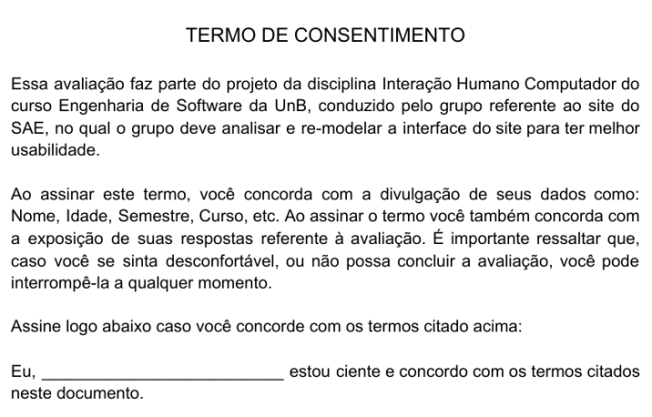

Relato dos Resultados da Avaliação do Protótipo de Papel
1 - Introdução
Neste documento se encontra o relato dos resultados da Avaliaçãp do Protótipo de Papel do SAE. Essa avaliação tem como objetivo testar a usabilidade do protótipo de papel, verificando se as decisões de IHC tomadas em sua criação realmente alcançam as metas de usabilidade definidas no projeto.
2 - Participantes
Com base nas definições de Perfis de Usuários do SAE feitas anteriormente, foram recrutados três participantes para essa avaliação, que se encaixam nos perfis definidos. Eles são:
Eliseu Kadesh: Estudante de Engenharia de Software do 5° semestre, 21 anos.
Matheus Gomes: Estudante de Engenharia de Software do 5° semestre, 20 anos.
Washington Bispo: Estudante de Engenharia de Software do 5° semestre, 21 anos.
3 - Preparo
Como descrito no Planejamento da Avaliação do Protótipo de Papel, antes de realizar a avaliação, seguimos os seguintes passos:
-
Definir as tarefas para os participantes executarem: Cada participante da avaliação terá que realizar a tarefa de Solicitar Orientação através do SAE. Vale ressaltar que essa tarefa já foi representada anteriormente em nossas análises de tarefas. Após a realização dessa tarefa, os participantes ainda tiveram que responder as seguintes questões:
- Considerando 1 como Muito Difícil e 5 como Muito Fácil, como você classifica a complexidade de realizar essa tarefa?
- Considerando 1 como Nada Intuitivo e 5 como Muito Intuitivo, como você classifica a usabilidade dessa interface?
- Você tem sugestões para melhorar essa interface?
- Tem algum elemento da interface que não está claro?
-
Definir o perfil dos usuários e recrutá-los: Utilizamos a descrição do perfil dos usuários já feita anteriormente para recrutar participantes. Portanto, nossos usuários serão: Estudantes de Engenharia de Software, entre 18 e 28 anos.
-
Criar o Protótipo de Papel criado para simular a execução das tarefas: Utilizaremos o Protótipo de Papel apresentado no PC4 para simular o funcionamento do site e realizar a tarefa escolhida para essa avaliação.
3.1 Termo de Consentimento
Antes de realizar a Avaliação, também foi necessário criar um Termo de Consentimento para ser entregue aos participantes. Esse Termo pode ser visto a seguir:

Cada participante leu e assinou o termo antes de fazer a Avaliação. Além disso, os avaliadores se disponibilizaram a responder quaisquer dúvidas restantes referentes ao documento no início da Avaliação.
3.2 Teste Piloto
Antes da realização da Avaliação com usuários reais, fizemos um teste piloto para verificar se a Avaliação planejata tinha os requisitos necessários para alcançar os resultados esperados.
Essa avaliação foi feita com membros do próprio grupo da disciplina:
- Gabriel Paiva no papel de Avaliador.
- Murilo Gomes no papel de Usuário.
O Teste Piloto foi feito de forma remota, através do Microsoft Teams e pode ser visto no link a seguir:
Com a execução desse Teste-Piloto, chegou-se à conclusão de que o planejamento feito estava adequando para ser realizado com usuários e obteria os resultados esperados.
4 - Execução
A execução dessa Avaliação foi dividida em dois modelos, devido ao cenário de pandemia em que nos encontramos. Foi possível fazer somente uma avaliação de forma presencial (que fosse segura) e as outras foram feitas de forma remota utilizando o Microsoft Teams.
-
No modelo de avaliação presencial, o usuário realizou a tarefa sozinho, sendo o avaliador responsável somente pelos elementos interativos da interface, trocando as telas, menus e/ou botões quando necessário.
-
No modelo de avaliação remoto, o usuário assistiu a tela do avaliador, enquanto o informava dos passos que desejava realizar. O avaliador simulou a execução de cada um desses passos, trocando na tela os elementos da interface, até que o usuário concluiu a tarefa.
4.1 - Avaliação Presencial
A avaliação do protótipo de papel feita no modelo presencial, teve Matheus Gomes como participante. Pode ser conferida no vídeo abaixo:
Nessa avaliação presencial, as perguntas que foram feitas após a interação com o protótipo de papel não foram gravadas. Mas estão registradas e podem ser conferidas no Relato dos Resultados dessa avaliação.
4.2 - Avaliações Remotas
Foram feitas duas avaliações no modelo remoto, tendo Eliseu Kadesh e Washington Bispo como participantes. Podem ser conferidas nos vídeos abaixo:
Avaliação Remota com Eliseu Kadesh:
Avaliação Remota com Eliseu Kadesh
Avaliação Remota com Washington Bispo:
Avaliação Remota com Washington Bispo
5 - Relato dos Resultados
5.1 - Resultados
Resultados da Avaliação Presencial:
Participante: Matheus Gomes
Conseguiu concluir a tarefa? Sim.
Tempo para realizar a tarefa: 45 segundos (levando em conta o tempo gasto pelo Avaliador para trocar os elementos da interface).
Erros cometidos: 2 - Clicou no indicativo de caminho atual. - Escolheu o menu de Questões.
Questões:
- Considerando 1 como Muito Difícil e 5 como Muito Fácil, como você classifica a complexidade de realizar essa tarefa?
Resposta: 3.
- Considerando 1 como Nada Intuitivo e 5 como Muito Intuitivo, como você classifica a usabilidade dessa interface?
Resposta: 4.
- Você tem sugestões para melhorar essa interface?
Resposta: "Poderia trocar os nomes dos menus para nomes mais intuitivos. E a parte que indica o caminho do site não está clara, parece um botão do menu."
- Tem algum elemento da interface que não está claro?
Resposta: "Como disse anteriormente, os nomes dos menus não estão tão claros e a parte que indica o caminho do site pode ser confundida com um botão do menu."
Resultados da Avaliação Remota com Eliseu Kadesh:
Participante: Eliseu Kadesh
Conseguiu concluir a tarefa? Sim.
Tempo para realizar a tarefa: 1 minuto 17 segundos (levando em conta o tempo gasto pelo Avaliador para trocar os elementos da interface).
Erros cometidos: 0
Questões:
- Considerando 1 como Muito Difícil e 5 como Muito Fácil, como você classifica a complexidade de realizar essa tarefa?
Resposta: 5.
- Considerando 1 como Nada Intuitivo e 5 como Muito Intuitivo, como você classifica a usabilidade dessa interface?
Resposta: 5.
- Você tem sugestões para melhorar essa interface?
Resposta: "Não."
- Tem algum elemento da interface que não está claro?
Resposta: "Não."
Resultados da Avaliação Remota com Washington Bispo:
Participante: Washington Bispo
Conseguiu concluir a tarefa? Sim.
Tempo para realizar a tarefa: 43 segundos (levando em conta o tempo gasto pelo Avaliador para trocar os elementos da interface).
Erros cometidos: 0
Questões:
- Considerando 1 como Muito Difícil e 5 como Muito Fácil, como você classifica a complexidade de realizar essa tarefa?
Resposta: 5.
- Considerando 1 como Nada Intuitivo e 5 como Muito Intuitivo, como você classifica a usabilidade dessa interface?
Resposta: 5.
- Você tem sugestões para melhorar essa interface?
Resposta: "Não."
- Tem algum elemento da interface que não está claro?
Resposta: "Escolher nomes mais significativos para o dropdown."
5.2 - Problemas Encontrados
Problema n°1: O cabeçalho que indica o caminho atual do site está parecido com um botão do menu dropdown, podendo causar confusão nos usuários.
Problema n°2: O nomes das abas do menu dropdown não claros o suficiente para os usuários, podendo causar confusão e dificultar a execução das tarefas no site.
5.3 - Possíveis Correções
Problema n°1: Modificar o design do cabeçalho que indica o caminho atual, diferenciando-o dos botões do menu dropdown, para não causar confusão.
Problema n°2: Escolher nomes mais significativos para os nomes das abas do menu dropdown, para deixar mais claro aos usuários o que encontrarão nessas abas e quais tarefas podem ser realizadas acessando-as.
6 - Conclusão
Com base nos resultados dessa Avaliação do Protótipo de Papel, foi possível notar os erros presentes na interface, que poderão ser corrigidos para melhorar a experiência do usuário e aplicadas no Protótipo de Alta Fidelidade.
Referências
SIMONE DINIZ JUNQUEIRO BARBOSA, BRUNO SANTANA DA SILVA, Interação Humano-Computador, 1a . Edição, Editora Campus, 2010.
Versionamento
| Data: | Versão: | Descrição: | Autor: |
|---|---|---|---|
| 17/11/2020 | 1.0 | Criação do Documento com os relatos dos resultados da Avaliação | Gabriel Paiva |